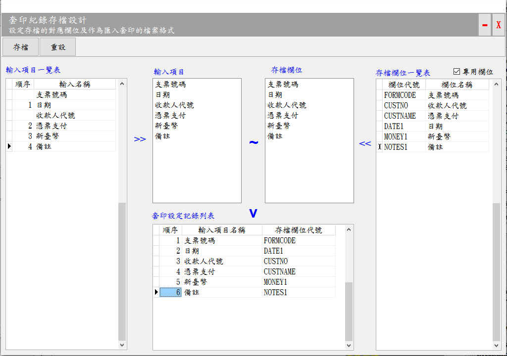

套印記錄存檔管理
執行本視窗的設定，可在執行套印後將套印紀錄儲存下來 以供日後查詢分析，並且做為匯入套印匯入檔案欄位的依據。

套印記錄存檔管理視窗
基本操作說明：
- 將輸入項目一覽表的資料加入輸入項目的區域，或者將存檔欄位一覽表的資料加入存檔欄位的區域
- 重設：將輸入項目一覽表的資料匯入輸入項目區域，並將存檔欄位區域的資料清空。
- 加入：如果在存檔欄位一覽表中的某個項目上面，用滑鼠左鍵快點2下, 即可將該項目加入至存檔欄位區域。
- 刪除：如果要將存檔欄位欄位區域中的項目刪除，請在該項目上面用滑鼠左鍵快點資料2下，即可刪除該項目。
- 調整輸入項目區域或存檔欄位區域內的項目順序，請在要移動的項目上面，按住滑鼠左鍵後，直接托曳至適當位置。
功能說明
- 輸入項目一覽表：
- 其內容係依據資料輸入設定視窗的內容所產生
- 「順序」欄位說明：無順序編號的「輸入名稱」，系由資料輸入設定加入的項目(通常用於查詢及輔助輸入功能)。有順序編號的輸入名稱，為實際套印的項目。
- 存檔欄位目一覽表：
- 一個通用的資料表，提供各種表格套印時，儲存套印資料。
- 全部(專用)欄位：如果尚未設存檔時，會出現全部欄位，如果已完成存檔時則會出現專用欄位，但是使用者也可以手動自行切換。
- 輸入項目與存檔欄位使用說明：
- 數量必需一致，列如各4個。
- 類型要一致。例如日期，就只能配合日期一、日期二，配對錯誤，系統亦會產生錯誤。同類型如果有多個編號一開始用，例如日期就先使用日期一，如有第二個日期再使用日期二。有一個規則可循，後序的查循分析才能順利進行。
- 同類型的表格設定最好一致，例如支票，到期日固定用日期一，不然整合性查詢時會產生困擾。例如設定3家銀行的支票，如果有一家的日期設定為日期一，另外二家設定為日期二，雖然各別查詢沒有問題，但是如果要整合查詢時，就無法以日期作為條件，對3種支票進行整合性查詢。
- 套印設定記錄列表：顯示輸入項目與存檔欄位配對結果。